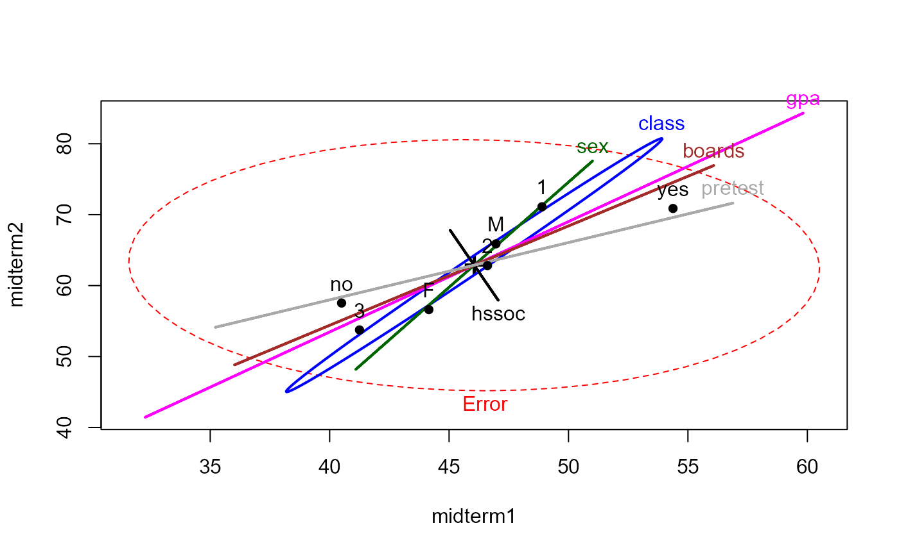

The data set SocGrades contains four outcome measures on student
performance in an introductory sociology course together with six potential
predictors. These data were used by Marascuilo and Levin (1983) for an
example of canonical correlation analysis, but are also suitable as examples
of multivariate multiple regression, MANOVA, MANCOVA and step-down analysis
in multivariate linear models.
Format
A data frame with 40 observations on the following 10 variables.
classSocial class, an ordered factor with levels
1>2>3sexsex, a factor with levels
FMgpagrade point average
boardsCollege Board test scores
hssocprevious high school unit in sociology, a factor with 2
no,yespretestscore on course pretest
midterm1score on first midterm exam
midterm2score on second midterm exam
finalscore on final exam
evalcourse evaluation
Source
Marascuilo, L. A. and Levin, J. R. (1983). Multivariate Statistics in the Social Sciences Monterey, CA: Brooks/Cole, Table 5-1, p. 192.
Details
midterm1, midterm2, final, and possibly eval are
the response variables. All other variables are potential predictors.
The factors class, sex, and hssoc can be used with
as.numeric in correlational analyses.
Examples
data(SocGrades)
# basic MLM
grades.mod <- lm(cbind(midterm1, midterm2, final, eval) ~
class + sex + gpa + boards + hssoc + pretest, data=SocGrades)
car::Anova(grades.mod, test="Roy")
#>
#> Type II MANOVA Tests: Roy test statistic
#> Df test stat approx F num Df den Df Pr(>F)
#> class 2 1.56729 11.7547 4 30 7.322e-06 ***
#> sex 1 0.55300 4.0092 4 29 0.010419 *
#> gpa 1 1.20780 8.7566 4 29 9.195e-05 ***
#> boards 1 0.73142 5.3028 4 29 0.002489 **
#> hssoc 1 0.03496 0.2535 4 29 0.905171
#> pretest 1 0.31307 2.2697 4 29 0.085881 .
#> ---
#> Signif. codes: 0 '***' 0.001 '**' 0.01 '*' 0.05 '.' 0.1 ' ' 1
clr <- c("red", "blue", "darkgreen", "magenta", "brown", "black", "darkgray")
heplot(grades.mod, col=clr)

pairs(grades.mod, col=clr)
 if (FALSE) {
heplot3d(grades.mod, col=clr, wire=FALSE)
}
if (require(candisc)) {
# calculate canonical results for all terms
grades.can <- candiscList(grades.mod)
# extract canonical R^2s
unlist(lapply(grades.can, function(x) x$canrsq))
# plot class effect in canonical space
heplot(grades.can, term="class", scale=4)
# 1 df terms: show canonical scores and weights for responses
plot(grades.can, term="sex")
plot(grades.can, term="gpa")
plot(grades.can, term="boards")
}
if (FALSE) {
heplot3d(grades.mod, col=clr, wire=FALSE)
}
if (require(candisc)) {
# calculate canonical results for all terms
grades.can <- candiscList(grades.mod)
# extract canonical R^2s
unlist(lapply(grades.can, function(x) x$canrsq))
# plot class effect in canonical space
heplot(grades.can, term="class", scale=4)
# 1 df terms: show canonical scores and weights for responses
plot(grades.can, term="sex")
plot(grades.can, term="gpa")
plot(grades.can, term="boards")
}